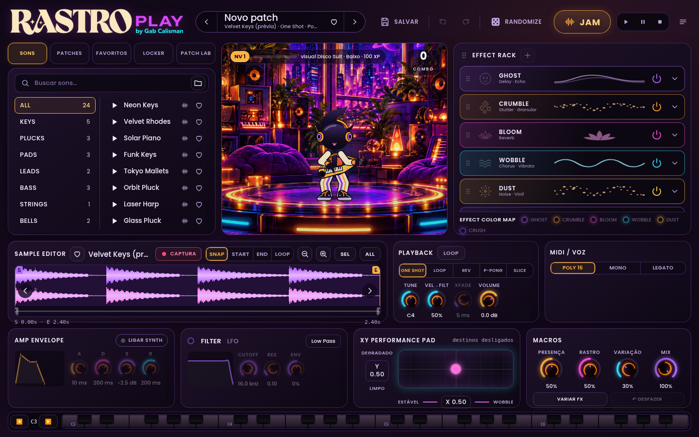
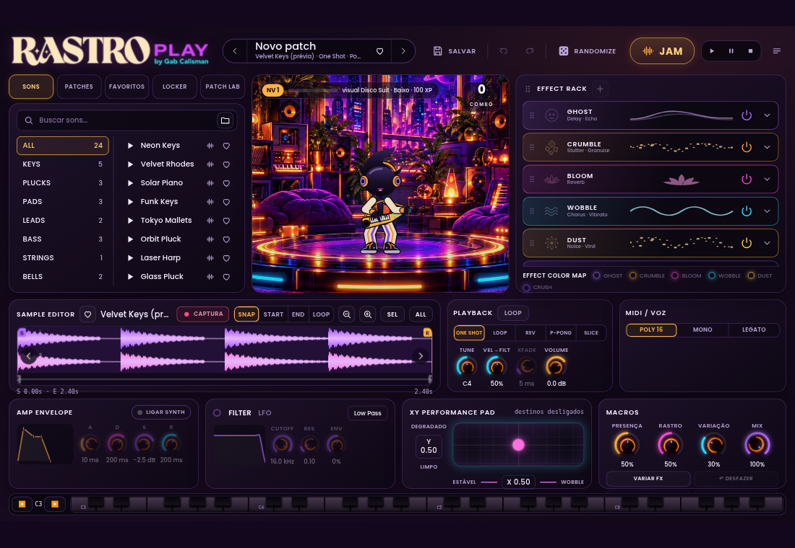
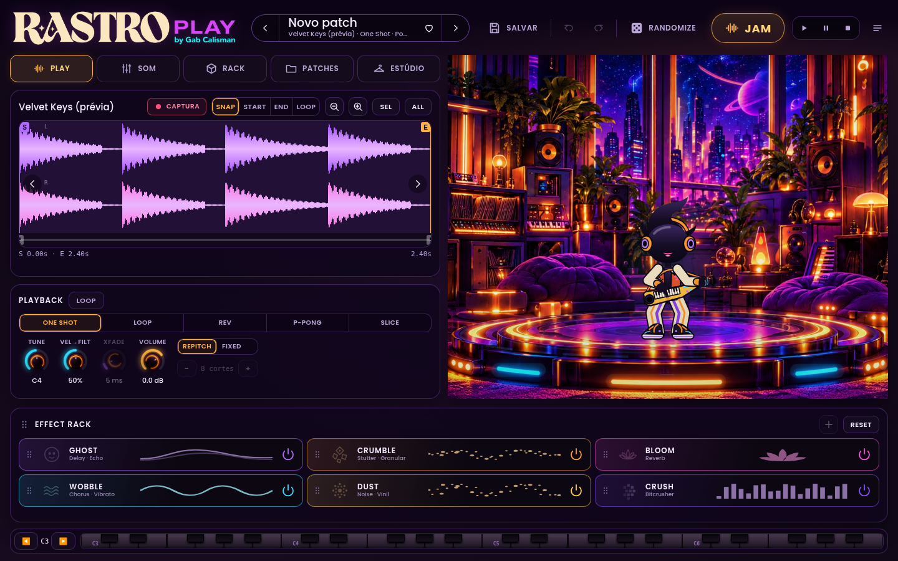
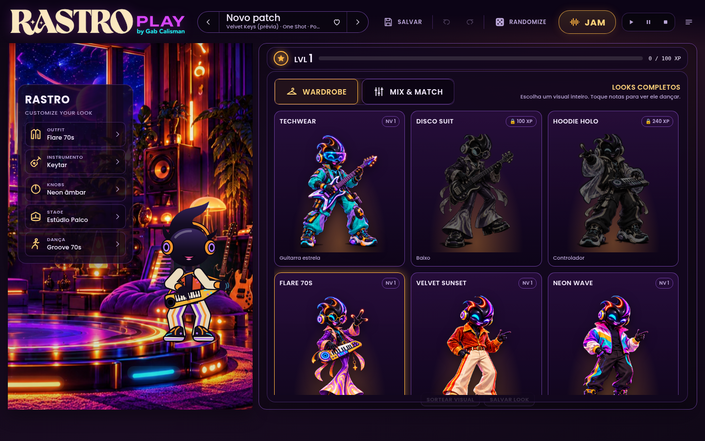

RASTRO PLAY — PR #5, primeira passagem
Capturas do código HTML/JS em Chromium/Linux. Sample e telemetria simulados.
Não são capturas do plugin no Mac, teste de áudio nem o redesign final aprovado da NOVA.
A personagem ainda precisa ser adaptada às referências. As imagens mostram o estado atual.
Estúdio — 1440 × 900

Estúdio — 1100 × 760

Sample

Sample em tamanho compacto
Locker

Locker em tamanho compacto